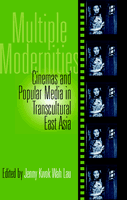

<body bgcolor="#FFFFFF" text="#000000" link="#0000FF" vlink="#CC0000" alink="#CC0000"><center><hr width="350" size="1" align="center" noshade>A comprehensive book on the complex relationship between media and modernity in east Asia<hr width="350" size="1" align="center" noshade><p><a href="https://cdcshoppingcart.uchicago.edu/Cart/ChicagoBook.aspx?ISBN=9781566399852&&PRESS=temple" target="_top">Buy this book!</a> | <a href="https://cdcshoppingcart.uchicago.edu/Cart/Cart.aspx?PRESS=temple" target="_top">View Cart</a> | <a href="https://cdcshoppingcart.uchicago.edu/Cart/Cart.aspx?PRESS=temple" target="_top">Check Out</a></p><p></p></center><!--none//--><h1>Multiple Modernities</h1>
<H2>Cinemas and Popular Media in Transcultural East Asia</H2>
<h3>edited by Jenny Kwok Wah Lau</h3>
<P>cloth 1-56639-985-8 $90.50, Dec 02, <FONT COLOR=#990033>Available</FONT>
<br>paper 1-56639-986-6 $40.95, Dec 02, <FONT COLOR=#990033>Available</FONT>
<BR> 264 pp
7x10
2&nbsp;figures 17&nbsp;halftones
</P><BLOCKQUOTE><I>"Lau has managed to bring together an impressive collection of essays by both established and emerging scholars. She does an excellent job of combining new research on national cinemas that have received a decent amount of scholarly attention in the West with lesser-known Asian media cultures. The cogency of the volume is astounding. </I>Multiple Modernities<I> provides valuable new insights into the relationship between Asian cinema, popular culture, and issues of modernity. It adds significantly to our understanding of political cinematic culture."</I>
<br>&#151<b>Gina Marchetti</b>, Ithaca College, and author of <I>Romance and the "Yellow Peril": Race, Sex, and Discursive Strategies in Hollywood Fiction</I><I></I></BLOCKQUOTE>
<p><I>Multiple Modernities</I> explores the cultural terrain of East Asia. Arguing that becoming modern happens differently in different places, the contributors examines popular culture&#151most notable cinema and television&#151to see how modernization, as both a response to the West and as a process that is unique in its own right in the region, operates on a mass level.
<p>Included in this collection are significant explorations of popular culture in East Asia, including Chinese new cinema and rock music, Korean cinema, Taiwanese television, as well as discussions of alternative arts in general.
<p>While each essay focuses on specific nations or cinemas, the collected effect of reading them is to offer a comprehensive, in-depth picture of how popular culture in East Asia operates to both generate and reflect the immense change this significant region of the world is undergoing.
<BR>&nbsp;<h2>Excerpt</h2><P>Excerpt available at <a href="http://www.temple.edu/tempress">www.temple.edu/tempress</a></p>
<BR>&nbsp;<h2>Reviews</h2>
<p><i>"Two of the book's many merits stand out especially prominently. First it is a useful introduction to various popular media...[second,] many of the researchers are engaged in interdisciplinary analyses...and it is the scholar's responsibility to identify and discuss these various manifestations."</i>
<br>&#151<b><i>Senses of Cinema</i></b>
<p><i>"</i>Multiple Modernities<i> is a welcome addition to the growing scholarship in the area of contemporary Asian cultural studies."</i>
<br>&#151<b><i><a href="http://mclc.osu.edu/rc/pubs/reviews/collier.htm" target="new">Modern Chinese Literature and Culture</a></i></b>
<p><i>"[A]n anthology comprising of cutting-edge research by interdisciplinary scholars.... provides an enlightening insight into the relationship between Asian cinema, popular culture, and issues of modernity.</i>
<br>&#151<b><i><a href="http://www.multilingual-matters.net/laic/004/0281/laic0040281.pdf">Language and Intercultural Communication</a></i></b> (pdf; review begins on page 2)
<BR>&nbsp;<h2>Contents</h2><P>
<p>Preface and Acknowledgments
<br>Introduction &#150 Jenny Kwok Wah Lau
<p><b>Part I: States of Modernities</b>
<br>1. Globalization and Youthful Subculture: The Chinese Sixth-Generation Films at the Dawn of the New Century &#150 Jenny Kwok Wah Lau
<br>2. Marx or Market: Chinese Rock and the Sound of Fury &#150 Jeroen de Kloet
<br>3. Reexamining the East and the West: Tanizaki Jun'ichiro, "Orientalism," and Popular Culture &#150 Mitsuhiro Yoshimoto
<br>4. Stranger Than Tokyo: Space and Race in Postnational Japanese Cinema &#150 Yomota Inuhiko, translated by Aaron Gerow
<br>5. Discourse on Modernization in 1990s Korean Cinema &#150 Han Ju Kwak
<br>6. Youth in Crisis: National and Cultural Identity in New South Korean Cinema &#150 Frances Gateward
<br>7. The Fragmented Commonplace: Alternative Arts and Cosmopolitanism in Hong Kong &#150 Hector Rodriguez
<p><b>Part II: Postmodernism and Its Discontents</b>
<br>8. Immediacy, Parody, and Image in the Mirror: Is There a Postmodern Scene in Beijing? &#150 Dai Jinhua, translated by Jing M. Wang
<br>9. Terms of Transition: The Action Film, Postmodernism, and Issues of an East-West Perspective &#150 Chuck Kleinhans
<br>10. Consuming Asia: Chinese and Japanese Popular Culture and the American Imaginary &#150 David Desser
<p><b>Part III: Women in Modern Asia</b>
<br>11. Of Executioners and Courtesans: The Performance of Gender in Hong Kong Cinema of the 1990s &#150 Augusta Lee Palmer and Jenny Kwok Wah Lau
<br>12. The Woman with Broken Palm Lines: Subject, Agency, Fortune-Telling, and Women in Taiwanese Television Drama &#150 Lin Szu-Ping
<p>About the Contributors
<br>Index
</P><BR>&nbsp;<H2>About the Author(s)</H2>
<P><b>Jenny Kwok Wah Lau</b> is Assistant Professor in the Department of Cinema at San Francisco State University.</P>
<P>Contributors: Jeroen de Kloet, Mitsuhiro Yoshimoto, Yomota Inuhiko, Frances Gateward, Hector Rodriguez, Dai Jaihua, David Desser, August Palmer, Lu Szu-Ping, and the editor.</P>
<BR><H2>Subject Categories</H2>
<p><A HREF="/tempress/cinema.html" TARGET="_top">Cinema Studies</a>
<BR><A HREF="/tempress/mass_media.html" TARGET="_top">Mass Media and Communications</a>
<BR><A HREF="/tempress/cultural.html" TARGET="_top">Cultural Studies</a>
</p>
<p align="center"><a href="https://cdcshoppingcart.uchicago.edu/Cart/ChicagoBook.aspx?ISBN=9781566399852&&PRESS=temple" target="_top">Buy this book!</a> | <a href="https://cdcshoppingcart.uchicago.edu/Cart/Cart.aspx?PRESS=temple" target="_top">View Cart</a> | <a href="https://cdcshoppingcart.uchicago.edu/Cart/Cart.aspx?PRESS=temple" target="_top">Check Out</a></p><p><font face="Arial" size="1"><a href="copyright.html" onMouseOver="window.status='Web Copyright Policy';return true;" onMouseOut="window.status=''" title="Web Copyright Policy">&copy;</a> 2015 <a href="http://www.temple.edu" target="new" onMouseOver="window.status='Link to Temple University home page';return true;" onMouseOut="window.status=''" title="Link to Temple University home page">Temple University</a>. All Rights Reserved. http://www.temple.edu/tempress/titles/1643_reg.html</font></p>